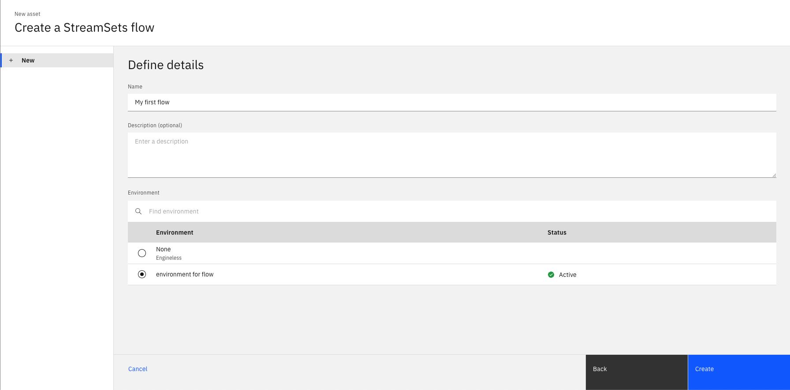
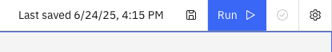
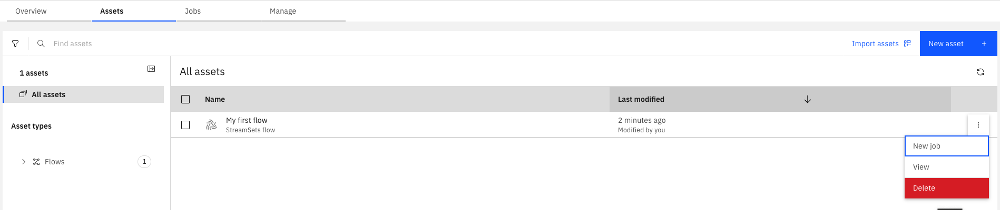
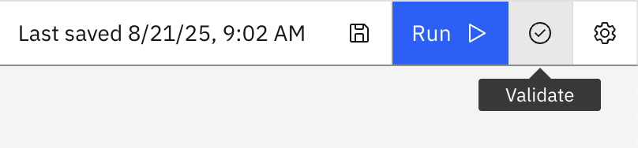
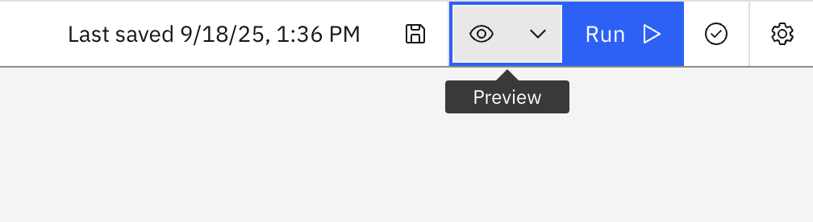
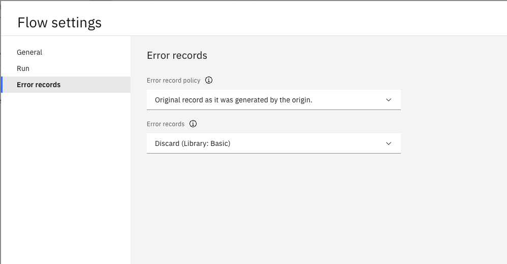

Flows#
A flow is an object used to store the execution flow of a data pipeline. It is composed of multiple stages, with each stage defining how data is handled at that part of the execution flow.
- The SDK provides the following functionality to interact with streaming flows:
Creating a flow
Retrieving flows
Editing a flow
Updating a flow
Duplicating a flow
Deleting a flow
Exporting flows
Importing flows
Validating a flow
Previewing a flow
Handling error records
Prerequisites#
- To create a flow using the SDK, make sure you have completed the following steps:
Note
Currently, the SDK only supports creating a flow with an engine installed.
Creating a Flow#
In the UI, you can create a flow by navigating to Assets -> New asset -> Create a flow.
Warning
Creating a streaming flow in the UI requires setting an environment.
{kind=link}

In the SDK, you can create a flow from a Project object using the
Project.create_flow() method.
You are required to supply the name and environment parameters.
To learn how to create an environment, see creating an environment.
You can also provide an optional description.
You do not need to specify flow_type because its default value is streaming.
This method returns a StreamingFlow instance.
>>> new_flow = project.create_flow(name='My streaming flow', description='optional description', environment=environment)
>>> new_flow
StreamingFlow(name='My streaming flow', description='optional description', flow_id=..., engine_version=...)
Retrieving Flows#
Flows can be retrieved through a Project object using the
Project.flows property.
If you want to retrieve only streaming flows, use the Project.flows.get_all() method to filter by flow_type.
You can also retrieve a single flow using the Project.flows.get() method, which takes unique identifiers such as flow_id or name.
>>> project.flows # a list of all flows
[StreamingFlow(...), StreamingFlow(...)...]
>>> project.flows.get_all(flow_type='streaming')
[..., StreamingFlow(name='My streaming flow', description='optional description', ...)...]
>>> project.flows.get(name='My streaming flow')
StreamingFlow(name='My streaming flow', description='optional description', ...)
Editing a Flow#
You can edit a flow in multiple ways.
For starters, you can edit a flow’s attributes like name or description.
>>> new_flow.description = 'new description for the flow'
>>> new_flow
StreamingFlow(name='My first flow', description='new description for the flow', ...)
You can also edit any flow by editing its stages. This can include adding a stage, removing a stage, updating a stage’s configuration, or connecting a stage in a different way than before. All of these operations are covered in the Stages documentation (see Batch Stages or Streaming Stages).
In addition, streaming flows have many properties related to pipelines, engines, and more. You can edit a streaming flow’s configuration through the Flow.configuration property.
This property returns a Configuration object that encapsulates a flow’s configuration.
You can print the configuration and edit it similarly to a dict.
>>> new_flow.configuration['retry_pipeline_on_error']
True
>>> new_flow.configuration['retry_pipeline_on_error'] = False
Arranging Stages#
When you add stages to a streaming flow programmatically, they are positioned in a simple left-to-right layout by default. For complex flows with multiple branches and connections, you may want to automatically arrange the stages for better visualization.
In the UI, there is an ‘Auto Arrange’ button that organizes stages based on their connections.
In the SDK, you can achieve a similar result by calling the StreamingFlow.auto_arrange() method.
This method positions stages based on their input and output lanes.
>>> new_flow.auto_arrange()
StreamingFlow(name='My streaming flow', ...)
Updating a Flow#
In the UI, you can update a flow by making changes to it and clicking the Save icon.
{kind=link}

In the SDK, you can make changes to a Flow instance
in memory and update it by passing that object to the Project.update_flow() method.
This method returns an HTTP response indicating the status of the update operation.
>>> new_flow.name = 'new flow name' # you can also update the stages, configuration, etc.
>>> project.update_flow(new_flow)
<Response [200]>
>>> new_flow
StreamingFlow(name='new flow name', description='new description for the flow', ...)
Duplicating a Flow#
To duplicate a flow using the SDK, pass a Flow instance
to the Project.duplicate_flow() method,
along with the name parameter for the new flow and an optional description parameter.
This duplicates the flow and returns a new instance of Flow.
>>> duplicated_flow = project.duplicate_flow(new_flow, name='duplicated flow', description='duplicated flow description')
>>> duplicated_flow
StreamsetsFlow(name='duplicated flow', description='duplicated flow description', ...)
Deleting a Flow#
To delete a flow in the UI, go to Assets, choose a flow, click the three dots next to it, and select Delete.
{kind=link}

To delete a flow using the SDK, pass a Flow instance to the Project.delete_flow() method.
This method returns an HTTP response indicating the status of the delete operation.
>>> project.delete_flow(duplicated_flow)
<Response [204]>
Validating a Flow#
In the UI, you can validate a streaming flow by making changes to the flow and clicking the Validate icon.
{kind=link}

To validate a streaming flow via the SDK, first update the flow and then call the StreamingFlow.validate() method.
This returns a ValidationResult object.
This object contains an issues attribute with a list of FlowValidationError instances if there are any errors.
>>> new_flow.add_stage('Trash')
Trash_01(stage_name='Trash 1')
>>> project.update_flow(new_flow)
<Response [200]>
>>> new_flow.validate()
ValidationResult(success=False, issues=[FlowValidationError(type='stageIssues', instanceName='Trash_01', humanReadableMessage='The first stage must be an origin'), FlowValidationError(type='stageIssues', instanceName='Trash_01', humanReadableMessage='Target must have input streams')], message='Validation Failed')
Previewing a flow#
In the UI, you can preview a flow by clicking the Preview icon.
{kind=link}

To preview a flow via the SDK, call the StreamingFlow.preview() method.
This will return a list of PreviewStage instances.
Each PreviewStage provides access to its input and output properties, which contain the input and output data for that stage.
>>> preview = flow.preview()
>>> preview
[PreviewStage(instance_name='DevRawDataSource_01'), PreviewStage(instance_name='Trash_01')]
>>> dev_raw_data_preview, trash_preview = preview
>>> dev_raw_data_preview.input
>>> dev_raw_data_preview.output
[('abc', 'xyz', 'lmn')]
Exporting Flows#
To export a flow using the SDK, call the Project.export_flow() method
and pass an individual Flow object. If you want to
export multiple flows at the same time, call the Project.export_flows()
method and pass a list of Flow objects.
Note
When using Project.export_flows()
to export multiple flows at once, all objects in the list must be of the same type. You cannot
pass a list containing both StreamingFlow and
BatchFlow objects. It must contain one type or the other.
- You can set the following additional parameters:
with_plain_text_credentials– export credentials in plain text. (only relevant to streaming flows)destination– specify the export location.stream– stream the ZIP file data.
The function returns the location where the exported ZIP file was written.
>>> flow
StreamingFlow(name='My streaming flow', description='optional description', ...)
>>> project.export_flow(flow=flow)
PosixPath('flows.zip')
Importing Flows#
To import a flow via the SDK, call the Project.import_flows() method and
specify the source parameter, which is the path to the ZIP file containing the JSON file or files for the streaming flow or flows to be imported, along with the type parameter, which should be
'streaming'.
- You must also set the
conflict_resolutionparameter, which determines how to handle an attempted import of a duplicate flow that already exists in the project. The options forconflict_resolutionare listed below: 'skip'– skip this particular flow and move to the next flow to be imported.'replace'- replace the existing flow with the flow to be imported.'rename'- keep the existing flow and rename the flow that is being imported.
The function returns either an imported StreamingFlow
or a list of imported StreamingFlow objects.
>>> project.import_flows(type='streaming', source='flows_to_import.zip', conflict_resolution='skip')
StreamingFlow(name='dummy_flow', description='dummy_description', flow_id='...', engine_version='...')
Handling Error Records#
To edit error record handling in the UI, click the gear icon in the top-right corner of the screen on a flow’s edit page.
This opens a new pop-up window with a tab for Error records on the left. This will let you adjust the error record handling for the flow.
{kind=link}

This page lets you change how error records are handled by policy and which stage should handle them.
The possible options for error record policy are Original record as it was generated by the origin and
Record as it was seen by the stage that sent it to error stream.
In the SDK, these equate to ORIGINAL_RECORD and STAGE_RECORD.
This can be updated in a flow’s configuration.
>>> new_flow.configuration['error_record_policy']
'ORIGINAL_RECORD'
>>> new_flow.configuration['error_record_policy'] = 'STAGE_RECORD'
To change the error record stage, you can call StreamingFlow.set_error_stage() method.
You need to pass either the label or the name of the new error stage. You can also optionally pass the new stage’s library.
Note
All error stages other than Discard will have configuration options for you to customize your experience.
>>> write_to_file = new_flow.set_error_stage('Write to File')
>>> write_to_file.configuration['directory'] = '/path/to/some/directory'
You can view the current error stage for a flow at any point using the StreamingFlow.error_stage property.
>>> new_flow.error_stage
WritetoFile_ErrorStage(stage_name='Error Records - Write to File')
Using Parameter Sets#
Parameter sets allow you to make your streaming flows more flexible by defining reusable parameters that can be referenced throughout your flow.
In the UI, you can use a Parameter Set in a streaming flow by navigating to Flow parameters -> Parameter sets -> Add parameter sets and choosing the desired parameter set from the list.
In the SDK, to use a Parameter Set instance in a streaming flow, you can pass it to the StreamingFlow.use_parameter_set() method.
This method establishes a relationship between the flow and the parameter set, and automatically adds the parameter set’s parameters as constants in the flow’s configuration.
>>> # Retrieve the parameter set
>>> paramset = project.parameter_sets.get(name='my_streaming_params')
>>>
>>> # Use the parameter set in the streaming flow
>>> streaming_flow_with_parameters.use_parameter_set(paramset)
StreamingFlow(name='flow with parameters', ...)
>>>
>>> # Update the flow to save the changes
>>> project.update_flow(streaming_flow_with_parameters)
<Response [200]>
To use a parameter from a parameter set in your streaming flow stages, reference it using the notation: ${parameter_set_name__parameter_name} (note the double underscore __ separator).
>>> # Example: Using parameters in stage configurations
>>> dev_raw_data = streaming_flow_with_parameters.add_stage('Dev Raw Data Source')
>>> dev_raw_data.data_format = '${my_streaming_params__data_format}'
>>> dev_raw_data.number_of_threads = '${my_streaming_params__number_of_threads}'
>>> dev_raw_data.stop_after_first_batch = '${my_streaming_params__stop_after_first_batch}'
You can retrieve all parameter sets associated with a streaming flow using the StreamingFlow.parameter_sets property.
>>> streaming_flow_with_parameters.parameter_sets
[ParameterSet(name='my_streaming_params', parameters=[...], description='', value_sets=[])]
Note
Streaming flows currently support only ParameterType.String type parameters.
Streaming flows do not support:
Local parameters
PROJDEF parameter sets
Value sets for parameter sets
For more information about parameter sets, see Parameter Sets.